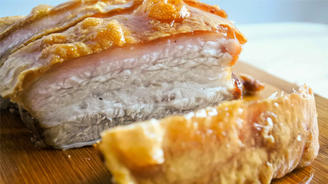

Odin Recipes
Lechon Kawali Air Fryer recipe

Description
A simple method of cooking Lechon Kawali. No dip frying, just Air fyer. My mother confidently used this method to cook lechon kawali for Christmas 2021, and it was, honestly, the best lechon kawali I've ever had. It's a shame I only had 1 slice, thanks Shiela (hihi).
Ingredients
- 1 kilo pork belly, lechon kawali cut
- 1 tablespoon salt
- 1/4 cup patis(fish sauce)
- 1 teaspoon black peppercorns
- 2 dried bay leaves
- water, as needed
Steps:
- Place the pork belly in a large pot. Add salt, patis, black peppercorns, and bay leaves. Pour enough water to cover.
- Bring to a boil then simmer until tender, about 2 hours. (Alternatively, use a pressure cooker or instant pot to cut your cooking time in half.)
-
Remove tender pork from the water and set aside to cool. (Reserve water as pork stock for another recipe.) Once cool, set aside to chill overnight.
- Preheat air fryer for 10 minutes at 200 degrees C when ready to cook.
- Remove pork from the refrigerator and place it in the basket of the air fryer. Close and set the timer for 10 minutes. Decrease the heat to 180 degrees C and air fry for another 20 minutes.
- Remove from the air fryer and let rest 5 minutes before chopping into bite-sized pieces. Serve with lechon sauce or your choice of dipping sauce.